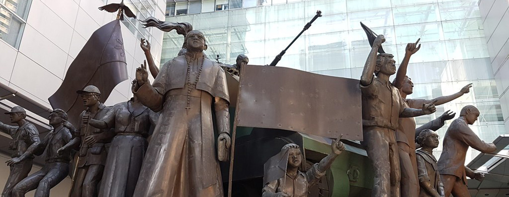
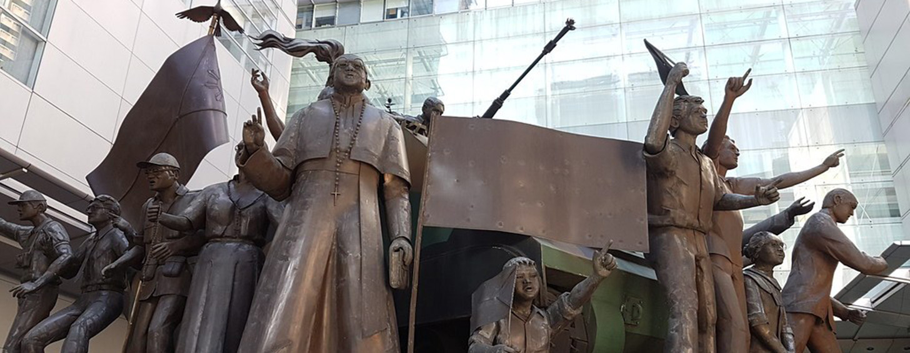

Looking for a place to experience outdoors? Well, that's exactly what Ayala Triangle Gardens offers. The place where you can relax, enjoy and take a breath of fresh air! Ayala Triangle Gardens is a 2-hectare landscaped urban park in Makati, Metro Manila, Philippines. It is a triangular public garden and courtyard in the center of the Makati Central Business District. A commercial area considered as a refuge for the fast-paced Makati City life, perfect for jogging, eating and people-watching. Visit the ayala triangle gardens now!


"Great little park to jog or walk around. Great for a quiet place to be alone or for a picnic with family. Lots of grass and trees for a pleasant exciting. Plenty of cats to keep you company too!"
"Such a nice place strategically located at the center of huge buildings. Makati is a bit far from my place yet it was worth it! The ambiance is nice, so full of trees and vegetation."
"Very relaxing and quiet place. This is a must-visit place especially at Christmas evenings till new year. Light shows are impressive, they are beautiful to watch. There are also restaurants around."
Welcome to the portal of the past, where you begin your journey with the castle of history, The Ayala Museum! The Ayala Museum is found in Makati City, located in Ayala Center adjacent to Greenbelt Mall run privately by the Ayala Foundation. This six-storey edifice houses ethnographic and archaeological exhibits on Filipino culture, art, and history. The museum is right in the middle of the Makati Central Business District, offering a relaxing and educational respite from the chaos of the city. After you're done getting to know the country's history, you can quickly return to the modern world with a visit to the nearby shopping center. And there are also lots of dining and entertainment options in the area. What are you waiting for?Visit the Ayala Museum now!

"A beautiful experience learning about Filipino culture and history. The collection of gold artefacts is awe inspiring. The diorama experience is super informative, engaging and very detailed. If you're in Makati, you should definitely find a couple of hours to visit the museum."
"One of the best museums I've been to. They have an extensive collection of gold from our ancestors. The Diorama collection is amazing. Definitely worth paying to visit this museum if you really want to learn and see more about our history."
"You should bring some time for the many well presented exhibits. You can combine your visit with a shopping spree as the museum is located in the greenbelt complex with landmark and other malls. The museum gives you vivid insights into history and culture of the Philippines."
Greenbelt, its malls and parks is like a wave of fresh air amidst the constantly modernising society. Coming here lets one have a close interaction with nature and feel its quietude and beauty up and close as well as being entertained inside the vast mall. There are sights of lagoons that are no less of a feast for your eyes. Then there are thick lush greenery surrounding the area accompanied by little vivid waterfalls and fountains. If that’s not enough, you will find the specific ‘Zen’ areas at your disposal that will provide help you cut off from the cacophony of the streets and relax!
"I love going shopping here! Its one of the best malls in Manila! It's amazing how everything lights up at the golden hour, the sun reflects on the small ponds! You could have a fine dinning or enjoy a cup of coffee with an amazing view!"
"Love this awesome, amazing place for a fantastic blend of greenery and a vast array of places to shop and dine. Not much people nowadays but the people they are observing social distancing and very cooperative. The mall sanitary protocols are also well executed."
"This is an amazing mall I've been since there is a park and chapel inside it. I used to stroll and just take a walk around looking on busy people having their own business and families that have their happy times."
The Yuchengco Museum opened its doors to the public in September 2005. Its primary goal is to foster a greater public appreciation of art through the finest international as well as local, cultural, historical, and design exhibits and programs. Located in Makati, the heart of Metro Manila’s financial district, the Museum is not only a “temple” that showcases art, but also a “forum” of exchange, debate, and education. The Museum was created to house the art collection of Ambassador Alfonso T. Yuchengco, and highlight his distinguished career as a businessman, diplomat, collector, philanthropist, patron of the arts, and advocate for education in the Philippines and beyond.
 

"Not a bad experience.If you like to seize any opportunity seeing arts this is for you. The exhibits are not so many, but with 4 floors of area it can be entertaining for less than an hour. There are quite a variety of different types of exhibits."
"Follows security protocols. Personnels greet people in a courteous manner. Approachable if you need to ask about directions. Nice facilities. Love the ambiance and the food and drink during opening exhibit."
"It's a great exhibition, it has 3 floors (one currently in re-working, and thus the ticket is only 50PHP) of interesting Filipino artists. Really worth it and not at all "personal" or too small. You can take your time."
Ayala Malls Circuit is situated in Circuit Makati, a 21-hectare mixed-use development on the former Sta. Ana Racetrack property of the Philippine Racing Club Inc. (PRCI). Circuit Makati is poised to be the unequivocal destination for all thing’s entertainment, with its world-class indoor theater, multipurpose entertainment spaces and open grounds integrated with commercial, hotel and residential blocks.

"The spirit of Christmas is just around the corner! A nice place to visit during this time of pandemic although most shops are still close. Social distancing and safety protocols are strictly observed. Be safe!"
"I love Circuit Makati and this is another progressing place in Makati. Since its in the outskirt of Makati, less foot traffic inside the mall, good food selection, nice cool cinema, chill and chic ambience, plus SnR got a branch here."
"I love the mall! There are new shops to check out. The mall layout is unique yet confusing at first but it encourages you to go around and explore on what the mall offers."
Washington SyCip Park is a privately owned public park near Greenbelt Mall in Legaspi Village, Makati, Metro Manila, Philippines. The park opened in 2006, and was named after Filipino accountant and banker Washington SyCip. In addition to many indigenous tropical trees and plants, the park contains gazebos, benches with quotes by Sycip, sculptures and a koi pond. The park is open daily. It is a no-smoking, no pet zone. Plan to visit Washington SyCip Park during your Makati vacation now!
"Probably the last remaining unspoiled patch of greenery located in Legaspi Village, Makati City. A breath of fresh air in this concrete jungle, literally as it was fresh and calming place. Hope they keep it that way. Washington SyCip was a visionary of his time."
"Nice little park with info plaques on trees and plants. Situated near Sunday market and plenty of coffee shops and banks. Worth a visit if your in the area. My go to place in the heart of Makati. "
"Great little park with a running track around it also a small meditation area that was gifted from Japan. In the hustle and bustle of Makati this is a great area to catch some natural vegetation and a bit of respite."
Are you looking for a place you can enjoy with your friends while watching some bands and having some fun? FYRE Rooftop Lounge is the new chill concept by Chef Kel Zaguirre of Locavore fame. It’s at the 3rd floor of a low rise building on busy P Burgos, so you have good views of the hustle and bustle of the streets with Rockwell’s skyscrapers in the background. The menu of FYRE is built around dishes cooked over fire but with a few surprises added on. Just a little warning the building is a 3 storey walk up so you’ll burn a few calories before getting to FYRE!
"Great rooftop bar in P.Burgos Makati. Food is top-notch and full bar offer drinks at good value. DJ plays nightly, beautiful crowd, strict security and very wonderful services."
"Cool place to hang out if it’s not raining. Prices of drinks are lower than most pubs in Población while that of food may be a bit high because they serve fusion cuisine."
"They have moderately-priced (200-500 pesos) food and drink options. Fairly crowded, and the edge seats which you might be interested in for the view may be reserved."
Want to look for the best hotel for all your desires? Z Rooftop Hostel is the best hotel you go to! You can see every angle of the Manila skyline glittering in the night while music plays in the background and laughter echoes all around you. This is a great place to meet new people and make connections. Z Rooftop Hostel welcomes anyone and everyone no matter if you’re staying there, down the street, or just passing through. So what are you waiting for? Book your stay at the Z Rooftop Hostel now!
"A really great hostel in a lively part of Makati. Surrounded by a lot of nice bars. The rooms of this hostel are really good and clean and have comfortable beds. The staff is really helpful."
"This is a fantastic hostel. Great way to connect with friends from around the world. Great facilities and rooms. They are generous with their walking tours and free breakfasts too."
"Really nice place. I do recommend this place, the security is very great,very clean and has a good atmosphere to have a good stay or even relax with loved ones. "

You wouldn’t expect to find 17th century ruins of a church amongst skyscrapers and traffic lights, but that is exactly what you find in Makati City. The Nuestra Señora de Gracia or known as the Guadalupe Church is the oldest cultural landmark in Makati City. The ruins are all that remain of one of the country's oldest churches. Today, the Guadalupe Ruins offers an eerie look back in time. So what are you waiting for? Plan your visit to Guadalupe Ruins and a wealth of other attractions!
"Nice historical place but quite boring for those who don't like history. I appreciate it's remnants."
"An old but beautiful church in Guadalupe. I felt very nostalgic even though it's my first time here."
"A must-see historical building for those history enthusiasts and for those who haven't been here."
You wouldn’t expect to find a circular church with an altar in the middle, huge crowds eager to hear powerful homilies on weekdays and Sunday masses and relevant formation talks between skyscrapers, right? That's exactly what is the Sto. Nino de paz Chapel or the Greenbelt Chapel. It is conveniently situated at the heart of the city’s Greenbelt shopping center which makes it easily accessible to the hardworking urban individuals who are looking to strengthen their Catholic faith, for prayer and healing experiences, and harmony with those in need. Visit the Greenbelt Chapel now!
"Quaint & charming Sunday service in a park. The GreenBelt Chapel is right in the midst of Ayala Center.Service was simple. We attended the 7.15am service, good congregation."
"This church is very close to heart because it is one of the favorite churches of my deceased younger brother. It is very serene and quiet which allows people to pray."
"This Chapel features an open-air and very sleek architecture. It offer weekly Masses specially during Sundays. Chairs are limited you can ocuppy the spaces surrounding the chapel."